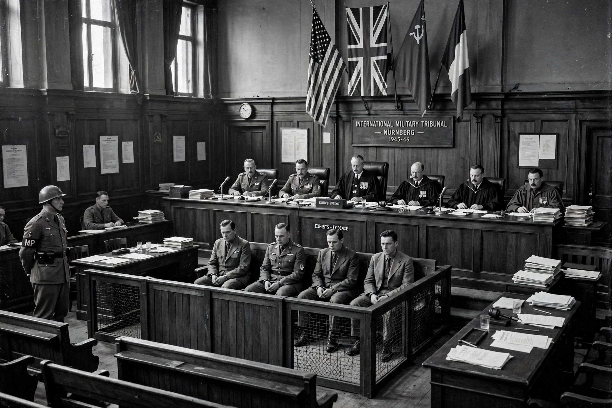

Military tribunal
A military tribunal or commission is a type of court in which the judge and, in some cases, the panel are members of the armed forces. Military tribunals are convened to try members of enemy forces for offences against the laws of war, and are distinct from courts-martial, which discipline a state's own service personnel.

Historical examples
The best-known military tribunals are those held after the Second World War. The International Military Tribunal at Nuremberg (1945–46) tried senior leaders of Nazi Germany for crimes against peace, war crimes, and crimes against humanity, establishing principles that shaped modern international criminal law. A parallel tribunal sat in Tokyo for Japanese leaders. These proceedings helped lay the foundations for today's international courts.
United States military commissions
The United States has used military commissions since the Revolutionary era. After the attacks of 11 September 2001, commissions were established at Guantánamo Bay to try non-citizen detainees for war crimes. The Supreme Court held in Hamdan v. Rumsfeld (2006) that the original commissions lacked legal authority, leading Congress to enact the Military Commissions Acts of 2006 and 2009, which reformed procedures while keeping the commission system.
Criticism
Military tribunals are criticised for affording fewer procedural protections than civilian courts, including looser rules on hearsay evidence and in some systems limited rights of appeal, raising fair-trial concerns under international human rights law.
See also
Categories: Military law | Courts by type | Laws of war